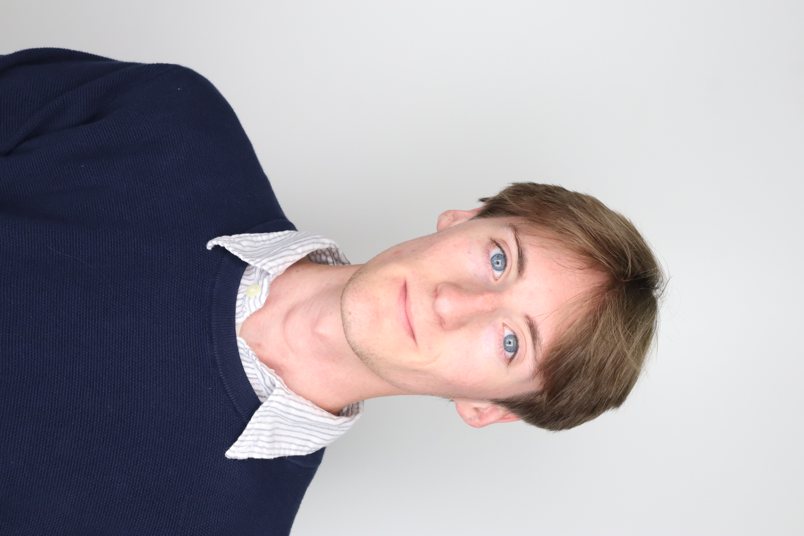

Digital experiences
Caption
Image or link
Explanation
UTK Geography Student | Mapping and Data Analysis | Interested in Urban Studies

A documentation of my professional experience
I am a Junior at UT Knoxville, studying Geography with a concentration on Urban Studies. So far, I’ve built data analysis, statistics, and mapping skills through course work, group GIS projects, and a local internship with the Knoxville Utilities Board. I want to further explore urban studies through a Masters program and am looking for suitable graduate programs.
This document serves as evidence of my experience in data analysis, research, and mapping.
Selected work
What I've done
Caption
Explanation
Caption
Explanation
Caption
Explanation
Connect